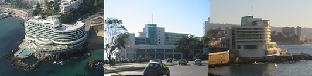

Accommodation

The conference will be held at the Sheraton Miramar Hotel & Convention Center (for English, choose Idioma: English in the northeast corner of the page) in Viña del Mar (twin city of Valparaiso). An online reservation system for FPSAC 2008 is now available.The special conference rate of CLP$80.000 (around US$180) is for single or double occupancy (two queen beds) and includes breakfast. Note that reservations must be made through the online reservation system for FPSAC 2008 for the special conference rate to apply.
We have negotiated special rates in various hotels close to the Sheraton Miramar Hotel & Convention Center. The rooms in these hotels all have private bathrooms. Breakfast is always included, and there is no tax for foreigners. Double occupancy always refers to two queen beds. To see where these hotels are located, click on the map below.
Hotel Monterilla Normal rate:US$95 for single occupancy in the cheapest room. The hotel is offering a 20% discount for FPSAC participants. For further information click here.
Hotel Cap Ducal Special rate: around US$110 for single or double occupancy. For further information click here.
Hotel Marina del Rey (Best Western): Speciall rate: CLP$36.000 +IVA for single occupancy and CLP$40.756 +IVA for double occupancy. For further information click here.
Hotel Rondó Special rate: around US$45 for single occupancy and around US$65 for double occupancy. For further information click here.
Residencia Offenbacher-Hof: Normal rate: around US$45 for single occupancy and around US$65 for double occupancy. The hotel is offering a 10% discount for FPSAC participants. For further information click here.
People are also welcome to look for cheaper options in travel guides such as Footprint or Lonely Planet, or on specialized websites. However, this must be done at your own risk. The FPSAC organizing committee will not feel responsible if you turn out to be unhappy about your choice of hotel (if the hotel is dirty or does not have heating for example). To find how close your hotel is from the Sheraton Miramar Hotel & Convention Center, one easy solution is to use www.planos.cl. In A enter Avenida Marina 15, Vina del Mar and in B enter the address of your hotel. Then click on Buscar. You will then see a detailed street map of Viña del Mar with the directions to go from A (the Sheraton Miramar Hotel & Convention Center) to B. The distance between A and B will appear in the small Búsqueda window.